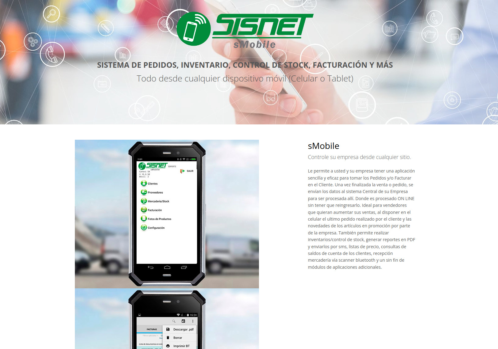
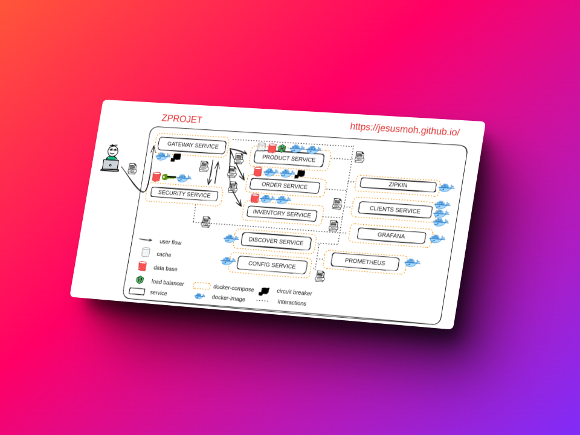
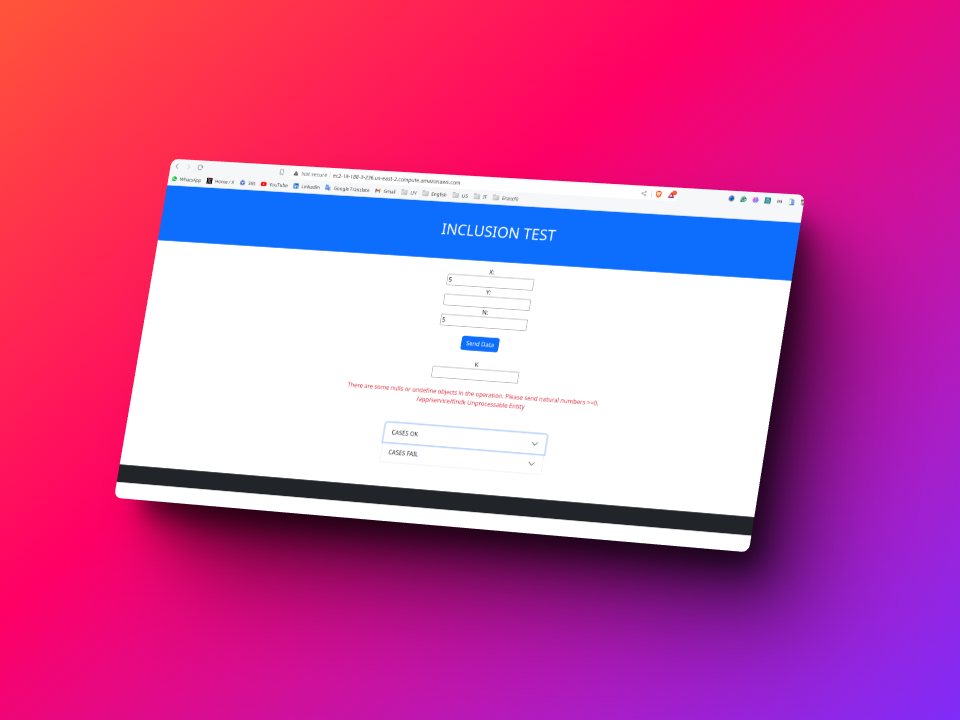

Intro
With a Bachelor's degree in software engineering from Technological University of Havana, I am a
dedicated, organized,
and hardworking professional who has actively contributed to projects in Fintech, Retail,
Fashion,
and IT healthcare. I am
versatile in the
software development lifecycle, seamlessly transitioning between roles such as Web Developer, QA
automation, DBA, and DevOps
engineer throughout the software construction process.
Java Scope
🔧 IDES :
Eclipse,
NetBeans,
Visual Studio Code.
🔧 Build Tools :
Maven &
Gradle.
📦 Package Managers:
Nexus.
📚 Libraries and Frameworks:
Spring,
Hibernate,
Apache Struts &
Vaadin.
🛠 Testing :
JUnit,
Test-Containers,
Mockito &
Selenium.
🔍 Code Quality/Analysis:
SonarQube &
FindBugs.
📊 Performance Monitoring:
JProfiler &
VisualVM.
🛡 Security:
OWASP Dependency &
Sonatype Nexus.
📜 API Documentation:
Swagger7
🔐 Authentication and Authorization:
Spring Security,
Keycloak &
OAuth.
🔌 Database Tools:
MySQL Workbench,
SQL Server Developer,
SQLite &
Flyway
🔌 ETL Tools:
Pentaho
🔗 Version Control:
Git &
SVN (Subversion)
📡 REST/SOAP Clients:
Postman &
SoapUI
🛠 Continuous Integration/Deployment (CI/CD):
Jenkins,
Travis CI &
GitLab CI
📦 Containerization and Orchestration:
Docker,
Docker-Compose &
Kubernetes
kubectl
🔐 Encryption and Decryption:
Bouncy Castle,
Jasypt &
Keyczar
🔍 Monitoring and Logging:
ELK Stack,
Splunk,
Prometheus &
Grafana
🛠 Collaboration and Communication:
Slack,
Microsoft Teams,
JIRA &
Confluence.
🔐 Code Obfuscation:
ProGuard.
🌐 Web Development:
Apache Tomcat,
Jetty,
PayaraMicro &
Spring Boot.
📦 Package Managers:
Apache Maven &
Gradle.
📊 Analytics and Reporting:
Apache POI &
JasperReports.
🚀 API Gateways:
Kong
🔌 ORM :
Hibernate
EclipseLink.
📦 Cloud Platforms:
AWS (Amazon Web Services)
Google Cloud Platform.
🔐 Static Code Analysis:
SonarQube
Fortify.
Skills
Srping Cloud | Selenium | Agile | Test-containers | JMeter | Scrum | Git | Jira |
Figma | Wix | SEO |AWS | REST | SOAP | API design | SDKs |
Postgres | Microservices | JS | S3 | Angular | PHP | Distributed Systems | Confluence |
Database | Design | SQL | NoSQL | MVC | Android | Java | CICD | Kubernetes | Docker | Linux |
WordPress |
HL7 | ETL | HCE | WooCommerce | PCI | Serverless.
AWS
Certified Developer Associate
AWS
Certified Solutions Architect Associate
AWS
Certified Cloud Practitioner
ACG
Kubernetes & Terraform
AWS
DynamoDB Deep Dive
Active Directory | RAID | HProline | Hyper-V | Server | Squid Proxy | Load Balancer | SQL Server |
Windows Server Family | VPN | Dropbox
Showcase
I possess a broad range of professional expertise across various platforms and design paradigms,
consistently
emphasizing budget optimization and the delivery of outstanding solutions. My skills include
creating responsive and
user-friendly websites, developing native Android applications, implementing seamless system
integrations, building
robust Java-based software, enhancing infrastructure, and providing support for PCs,laptops, Servers
in on-premise and cloud and.
Hiromi Asai home page. ( Wix | SEO |
Web |Fashion industry | SaaS)

SISNET
Mobile for Retail/Logistic :
(Android | Sqlite | Rest | Docker | Java Backend | Rest API)
Web ecommerce integration :
(Rest API | Java | Postgres | WooComerce | PHP)
Payment Gateway : Fiserv Uruguay
(Rest |
Soap | Angular | Spring | Microservice)
Infrastructure improvements leading : SASA Cuba
( Hyper-V | Active Directory | RAID | ETL | On-premise | Windows Server | SQL Server )
<< Side & Demo projects>>

z-project :
Microservice demo. ( Spring | docker |
Cloud | Microservice)

inclusion :
Java fullstack demo. ( Cloudformation | AWS | EC2 | Angular)
Experience
FISERV (Global Payment Processor/Fintech)
Senior Software Development Engineer (II) | May 2021 – Dec 2023
- Developed Spring/Angular solutions for payment processing, such as gateway-payments/switches
and
offered
top-tier assistance for financial switching (transactions) among POS terminals, ATM,
e-commerce,
and financial
authorizers with various specifications like REST, ISO8583, and SOAP.
- Contributed to achieve a 60% reduction in backup time for logs, thereby enhancing data
security
and minimizing
potential system downtime and Implementing integration tests with Selenium| Junit| Docker
for
quality assurance,
getting around 40% less of issues in production.
- In 2022, I contributed to Fiserv Uruguay's success in becoming the first payment network,
capturing over 50% of
the Uruguayan payments market across all environments. As part of the FSwitchUY team, we
prioritized maintaining
robust solutions through continuous updates and timely resolution of critical security
issues.
This, combined
with other key objectives, enabled the company's sustained growth.
SISNET (Software Provider for Retail/Logistic)
Senior Software Developer (Java & Android) | Nov 2017 – May 2021
- Implemented Java backend solutions (Rest/SOAP APIs) using Jakarta, Payara Micro, Swagger and
Hibernate resulting
in a 40% improvement in API response time, and enhanced system POS terminal performance.
- Designed a roadmap to upgrade and transform legacy monolithic to microlites and
microservices.
- Achieved a UI/UX for the mobile App and admin panel resulting satisfaction and positive
feedback.
SASA (Retail auto-parts)
IT technical leader & Senior Systems Engineer | Sep 2014 – Nov 2017
- Planned and configured the infrastructure changes for 14 dependencies on-premises with
highly
available
solution, with Hyper-V, Active Directory, RAID and Hp Proline servers that improved
availability
about 99.00%.
- Developed a Java solution from scratch for categorizing slow-moving stock at the company
(around
$10M in parts
and pieces in warehouses) using the Pareto principle; leading to a cost reduction of
$500,000.
- Accomplished a 70% decrease in processing time for ETL tasks related to stock status processing
using Pentaho and Scala to support
parallel processing of large datasets
Contact